Astra
БИОГРАФИЯ
Astra управляет энергией, пространством и временем, меняя поле битвы по своему желанию. Полный контроль над астральной формой и талант стратегического предвидения позволяют агенту из Ганы опережать врага на целую вечность.
Ability

Q – "ИМПУЛЬС НОВОЙ" - Разместите звезды в Астральной форме (X) АКТИВИРУЙТЕ звезду, чтобы вызвать "Импульс новой". Он быстро заряжается и оглушает всех игроков в зоне действия.
E – "ТУМАННОСТЬ" - Разместите звезды в Астральной форме (X) АКТИВИРУЙТЕ звезду, чтобы преобразовать ее в "Туманность" (дым). Выберите звезду и нажмите клавишу (F), чтобы вызвать "Рассеивание". Звезда возвращается и может быть размещена в другом месте через некоторое время. Перед возвращением звезды "Рассеивание" на короткое время формирует ложную "Туманность" на месте звезды.
C – "ГРАВИТАЦИОННЫЙ КОЛОДЕЦ" - Разместите звезды в Астральной форме (X) АКТИВИРУЙТЕ звезду, чтобы создать "Гравитационный колодец". Игроки в области действия притягиваются к центру. Затем "Гравитационный колодец" взрывается, ослабляя игроков внутри.
X – "АСТРАЛЬНАЯ ФОРМА / ПРОСТРАНСТВЕННЫЙ РАЗЛОМ" - Нажмите кнопку "АКТИВИРОВАТЬ" (X), чтобы войти в Астральную форму и разместить звезды с помощью кнопки ОСНОВНОГО РЕЖИМА СТРЕЛЬБЫ. Затем звезды можно снова активировать, чтобы создать "Импульс новой", "Туманность" или "Гравитационный колодец". Когда "Пространственный разлом" заряжен, используйте кнопку ДОП. РЕЖИМА СТРЕЛЬБЫ в Астральной форме для выбора первой точки, а затем кнопку ОСНОВНОГО РЕЖИМА СТРЕЛЬБЫ для выбора второй точки. Возникнет "Пространственный разлом", который проходит через выбранные точки. "Пространственный разлом" блокирует пули и сильно снижает громкость звуков.